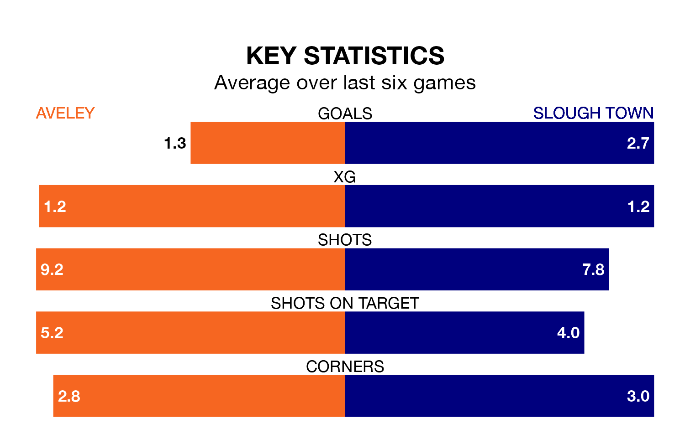

Aveley face Slough Town at the Parkside Stadium on Saturday looking to secure a first win in eight National League North and South games.
Aveley have lost four and drawn three matches since they last earned three points – against Hemel Hempstead Town on November 6.
They face a Slough side who have won four and drawn two over that time.
Slough are zero in the table after 20 games, of which they have won seven and drawn five, earning 26 points.
Aveley are 13 places behind Town in 13th, with 10 wins and five draws putting them on 35 points.
With 37 goals in 20 games so far this season, the visitors are scoring more than average in the league with 1.9 goals per game. But they are conceding more than average too, letting in 33 goals at a rate of 1.6 per game.
The home side are also above average scorers, with 1.5 goals per game, compared to a league average of 1.4. They have conceded 1.2 goals per game.
Aveley's last match was on December 16, a 1-0 loss against Braintree Town.
Slough beat Hemel Hempstead Town 2-0 last time out, on Tuesday, with on the scoresheet.
Updated: 12:43, 20/12/23